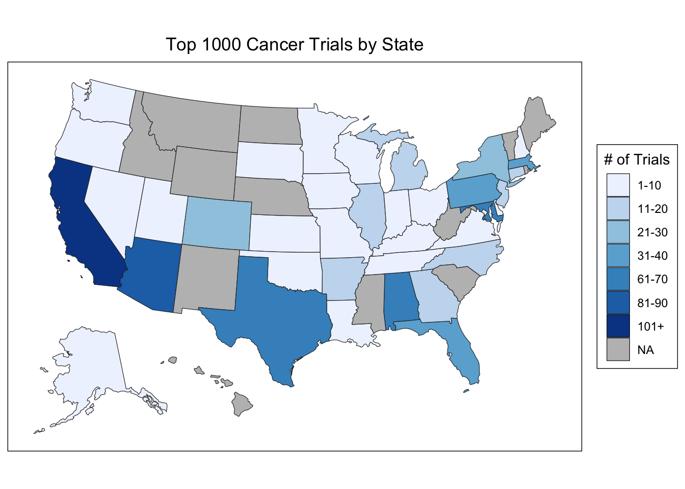
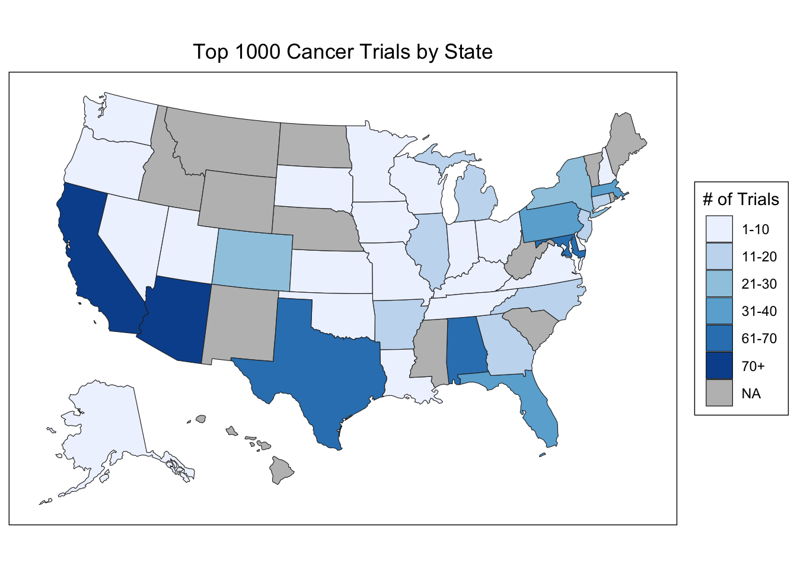
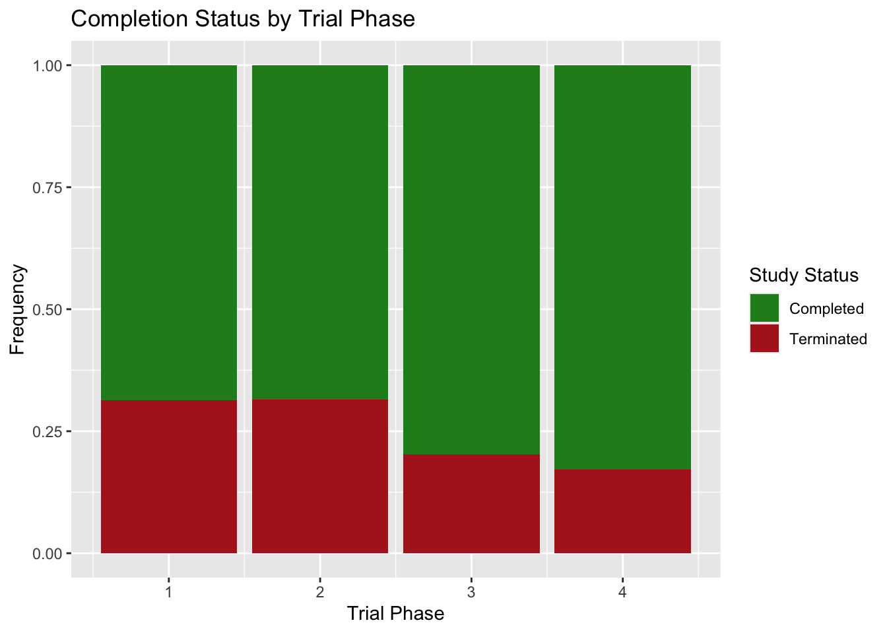
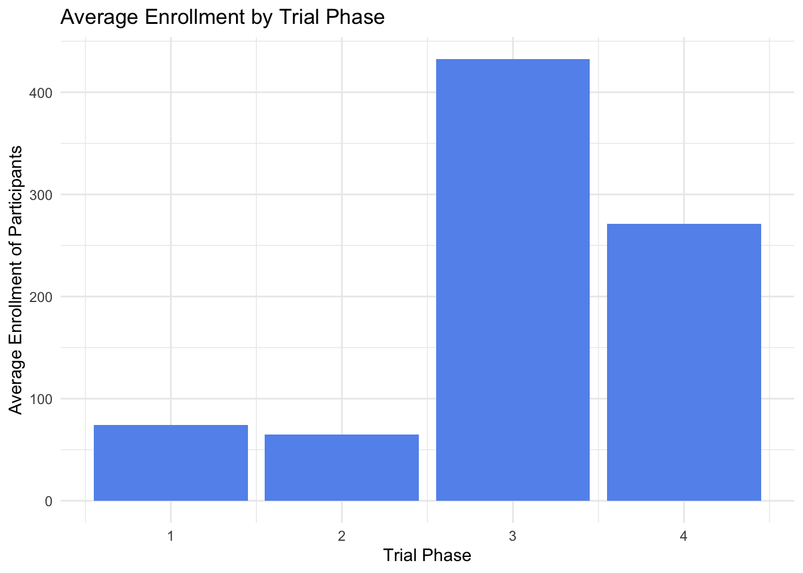
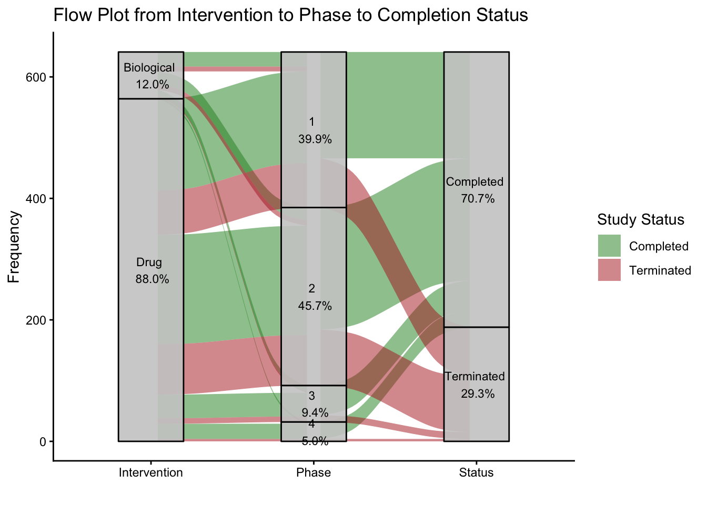

Code
library(dplyr)
library(stringr)
library(ggplot2)
library(tidycensus)
library(sf)
library(usmap)
library(choroplethr)
library(dplyr)
library(tidyr)
library(tibble)
library(ggalluvial)library(dplyr)
library(stringr)
library(ggplot2)
library(tidycensus)
library(sf)
library(usmap)
library(choroplethr)
library(dplyr)
library(tidyr)
library(tibble)
library(ggalluvial)Looking at the range of cancer trials across the US provides us with a comprehensive view of where the majority of the centers, as well as the populations of patients are. Using the top 1000 clinical trials across all cancer types, the bar graph and US map show the distribution of clinical trials over all 50 US states.
Top_1000 <- read.csv("Top_1000_Cancers.csv")
#take out excess columns
Top_1000 <- Top_1000 |>
select(Study.Status:Locations)
#extrapolate states from location
Top_1000 <- Top_1000 |>
mutate(
region = str_extract(
Locations, "([^,]+),\\s*\\d{5}") |>
str_replace(",\\s*\\d{5}", "") |>
str_trim()
)
# Extrapolate City
Top_1000 <- Top_1000 |>
mutate(
City = str_split_i(Locations, pattern = ",\\s*", i = 3)
)
Top_1000_map <- Top_1000 |>
count(region, name = "value")
Top_1000$region <- ifelse(Top_1000$region %in% state.name, Top_1000$region, NA)
ggplot(Top_1000 |> filter(!is.na(region)), aes(x = region)) +
geom_bar(fill = "blue") +
theme(axis.text.x = element_text(angle = 60, hjust = 1)) +
labs(title = "Top 1000 Trials by State",
x = "State",
y = "Trial Count")
Top_1000_map$value <- cut(
Top_1000_map$value,
breaks = c(0, 10, 20, 30, 40, 50, 60, 70, 80, 90, 100, Inf),
labels = c("1-10", "11-20", "21-30", "31-40", "41-50", "51-60", "61-70", "71-80", "81-90", "91-100", "101+"),
right = TRUE
)
state_choropleth(Top_1000_map,
title = "Top 1000 Cancer Trials by State",
legend = "# of Trials",
num_colors = 13) +
scale_fill_brewer(palette = "Blues",
na.value = "grey")
The leading state in clinical trials is California by a large margin, with Arizona, Texas, Alabama and Maryland following. California contains 16 medical schools with five major University of California (UC) campuses, resulting in the largest number of clinical trials of any state in the US. The largest states by population are also California and Texas, which could also be a main reason why they host many clinical trials. Many states have little to no clinical trials, resulting in patients needing to travel to other states to participate.
In order to understand if the presence of various types of cancer trials are consistent across the US, we can look specifically at breast cancer trials to see if the patterns remain the same as the general trial data. Breast cancer clinical trials across the top 200 breast cancer trials in the US is shown.
breast_cancer <- read.csv("Breast_Cancer.csv", nrows = 197)
breast_cancer_df <- as.data.frame(breast_cancer)
#take out excess columns
breast_cancer_df <- breast_cancer_df |>
select(Study.Status:Locations)
#extrapolate states from location
breast_cancer_df <- breast_cancer_df |>
mutate(
region = str_extract(
Locations, "([^,]+),\\s*\\d{5}") |>
str_replace(",\\s*\\d{5}", "") |>
str_trim()
)
# Extrapolate City
breast_cancer_df <- breast_cancer_df %>%
mutate(
City = str_split_i(Locations, pattern = ",\\s*", i = 3)
)
breast_cancer_df$region <- ifelse(breast_cancer_df$region %in% state.name, breast_cancer_df$region, NA)
ggplot(breast_cancer_df, aes(x = region)) +
geom_bar(fill = "#E91E63") +
theme(axis.text.x = element_text(angle = 45, hjust = 1)) +
labs(title = "Breast Cancer Trials by State",
x = "State",
y = "Trial Count")
df_BC_map <- breast_cancer_df |>
count(region, name = "value")
df_BC_map$value <- cut(df_BC_map$value, breaks = c(0,5,10,15,20,Inf),
labels = c("1-10","6-10","11-15","16-20","20+"), right = TRUE)
state_choropleth(df_BC_map,
title = "Breast Cancer Clinical Trials by State",
legend = "# of Trials",
num_colors = 7) +
scale_fill_brewer(palette = "RdPu",
na.value = "grey")
The trials remain primarily located in the larger states (California, Florida and Texas), with a noted presence in Alabama and Arizona. These trends are consistent with those of the broad cancer graphs, although there seems to be a greater presence in Alabama than the general cancer trends showed. This is due to the University of Alabama being one of the nations leaders in clinical trials with 1,469 trials being conducted at the university in 2023, with significant numbers of them attributing solely to breast cancer [1]. This proves that while the general geographical trends of where cancer trials remain consistent, there may be some states that have a greater presence of specific cancer specializations.
Clinical trials are broken into 4 phases to ensure safety and efficacy [2]:
Phase 1 (Safety) - During this phase, humans are tested for the first time to prove that the intervention is safe to be in the human body. This is also where they determine the ideal dosage at which the therapeutic can be administered.
Phase 2 (Efficacy) - Slightly larger groups of humans are tested to see if the intervention works and to monitor the side effects.
Phase 3 (Comparison) - Using even larger groups than seen in phase 2, the intervention is compared to other current and similar interventions on the market. This is to compare the treatment to the standard and monitor the long-term side effects. After the completion of phase 3, the product can be FDA approved.
Phase 4 (Post-Marketing) - Following FDA approval, the intervention is assessed long term for further side effects and efficacy while it is on the market. It can also be studied for new potential uses of the product.
Patient enrollment patterns across clinical trial phases can be assessed by examining the top 1,000 trials and their respective enrollment numbers.
Top_1000$Enrollment <- as.numeric(Top_1000$Enrollment)
Top_1000 <- Top_1000 |>
mutate(
Phase_Rank = case_when(
Phases == "PHASE1" ~ 1,
Phases == "PHASE2" ~ 2,
Phases == "PHASE3" ~ 3,
Phases == "PHASE4" ~ 4,
TRUE ~ NA_real_
)
)
avg_enrollment <- Top_1000 |>
group_by(Phase_Rank) |>
summarise(Avg_Enrollment = mean(Enrollment, na.rm = TRUE))
ggplot(avg_enrollment, aes(x = Phase_Rank, y = Avg_Enrollment)) +
geom_col(fill = "cornflowerblue") +
labs(title = "Average Enrollment by Trial Phase",
x = "Trial Phase",
y = "Average Enrollment of Participants") +
theme_minimal()
This plot shows that phase 3 has the largest number of patients enrolled in the trials, which is expected given that it is the final phase before FDA approval and often has hundreds to thousands of patients enrolled. Phase 1 and 2 clinical trials often have a much greater filter of patients that can be recruited and qualify for the studies, resulting in lower enrollment numbers (below 100). Phase 3 and Phase 4 studies are designed to be broader and more representative of real-world populations, allowing for more flexible inclusion criteria and therefore much higher enrollment.
It is important to understand at each phase, what percent of the trials go to completion vs. termination. Completion indicates that the trial ran as expected, although does not necessarily guarantee that it will make it to approval. Termination means that the the trial stopped before expected and will not resume, often the result of safety concerns and/or lack of efficacy. (Note: the frequencies of each trial are set to one to compare the proportions of completed vs. terminated across each phase)
Top_1000 <- Top_1000 |>
mutate(
Study.Status = case_when(
grepl("^COMPLETED$", Study.Status) ~ "Completed",
grepl("^TERMINATED$", Study.Status) ~ "Terminated",
TRUE ~ NA_character_
),
Study.Status = factor(Study.Status)
)
ggplot(
subset(Top_1000, !is.na(Study.Status)),
aes(x = Phase_Rank, fill = Study.Status)) +
geom_bar(position = "fill") +
scale_fill_manual(
values = c(
"Completed" = "forestgreen",
"Terminated" = "firebrick")) +
labs(title = "Completion Status by Trial Phase",
x = "Trial Phase",
y = "Frequency",
fill = "Study Status")
As we might expect, there are more trials that go to failure in the earlier phases given that they are higher risk and have less proven efficacy and safety, resulting in the study having a greater chance of not going as planned. It is surprising that stage 4, the stage following clinical trial used primarily as surveillance, has a termination rate similar to phase 3. One might expect it to be closer to zero since it has gone through all three stages and already hit the market, so termination should be less likely.
To understand how the enrollments and phase direct the outcome of the trials, the completion status compared with phase and enrollment numbers.
ggplot(Top_1000 |> filter(!is.na(Study.Status)), aes(x = Phase_Rank, y = Enrollment)) +
geom_point(aes(size = Enrollment, color = Study.Status), alpha = 0.6) +
geom_jitter(aes(color = Study.Status), width = 0.3, height = 0.1, alpha = 0.4) +
scale_color_manual(values = c("Completed" = "forestgreen", "Terminated" = "red")) +
scale_x_continuous(breaks = c(1, 2, 3, 4),
labels = c("Phase 1", "Phase 2", "Phase 3", "Phase 4")) +
labs(title = "Distribution of Trial Enrollment by Phase and Status",
x = "Trial Phase",
y = "Patient Enrollment",
size = "Patient Enrollment",
color = "Study Status") +
theme_minimal()
We can see that the higher the patient enrollment, the more likely the trial is to result in completion. As noted earlier, the higher phases have more patient enrollment and we can see they also result in greater success. Thus we can conclude that trials that have more patients are more likely to go to completion and those with fewer patients (approaching zero) have a much greater failure rate. (Note: Jittering is used slightly for height to show greater distribution patterns, although minimally to not skew the y axis enrollment values)
Clinical trials can include a variation of interventions including drugs and biological. Drugs are classified as a chemically synthesized substance to diagnose, treat, prevent or modify a disease or bodily function. Biological products include therapeutics that are derived from living organisms, such as cells, genes tissues or therapies; these are often seen in practice as vaccines or cell therapies. While there are other forms of intervention such as procedures and devices, the majority of the trials fall into drug and biologics, thus this is where the data will focus. Here we look at where each of these interventions falls end up in phases and eventually to completion or failure. This flow plot shows the where the trials based on various intervention types, what phase they ended up in and whether or not the trial went to completion.
Top_1000 <- Top_1000 |>
mutate(
Interventions = case_when(
grepl("^DRUG:", Interventions) ~ "Drug",
grepl("^GENETIC:", Interventions) ~ "Genetic",
grepl("^BIOLOGICAL:", Interventions) ~ "Biological",
grepl("^PROCEDURE:", Interventions) ~ "Procedure",
grepl("^DEVICE:", Interventions) ~ "Device",
TRUE ~ "Other" # All non-matching interventions are now grouped and kept
),
Interventions = factor(Interventions)
)
Top_1000$Phases <- factor(Top_1000$Phases,
levels = c("PHASE1", "PHASE2", "PHASE3", "PHASE4", "N/A"))
Top_1000 <- Top_1000 |>
mutate(
Phase_Rank = case_when(
Phases == "NA" ~ NA,
Phases == "PHASE1" ~ 1,
Phases == "PHASE2" ~ 2,
Phases == "PHASE3" ~ 3,
Phases == "PHASE4" ~ 4
)
)#Flow Plot
Flow_Phase_Data <- Top_1000 |>
rowwise() |>
mutate(
Phase_1 = ifelse(Phases %in% Phase_Rank[1:4], Phases, NA),
Phase_2 = ifelse(Phases %in% Phase_Rank[2:4], Phases, NA),
Phase_3 = ifelse(Phases %in% Phase_Rank[3:4], Phases, NA),
Phase_4 = ifelse(Phases == "PHASE4", Phases, NA)
)
Flow_Phase_Data <- Flow_Phase_Data |>
filter(
!is.na(Interventions),
!is.na(Phase_Rank),
!is.na(Study.Status)
)
Flow_Phase_Data <- Flow_Phase_Data |>
filter(Interventions %in% c("Drug", "Biological"))
ggplot(Flow_Phase_Data, aes(axis1 = Interventions,
axis2 = Phase_Rank,
axis3 = Study.Status)) +
geom_flow(aes(fill = Study.Status), width = 1/12) +
geom_stratum(width = 1/(2.5),
fill = "gray80",
color = "black",
alpha = 0.9) +
geom_text(
stat = "stratum",
aes(x = after_stat(x),
y = after_stat(y),
label = paste(
after_stat(stratum), "\n",
scales::percent(after_stat(count) / nrow(Flow_Phase_Data), accuracy = 0.1))),
size = 3) +
scale_x_discrete(limits = c("Intervention", "Phase", "Status")) +
theme_classic() +
scale_fill_manual(
values = c(
"Completed" = "forestgreen",
"Terminated" = "firebrick"
)) +
labs(title = "Flow Plot from Intervention to Phase to Completion Status",
y = "Frequency",
fill = "Study Status",
x = "")
The majority of the trials fall into the drug category (88%) with only 12% as biological products. As expected, very few trials end up in Phase 3 and 4 clinical trials, although interestingly we see more trials in phase 2 than phase 1. This is somewhat unexpected as we would assume there would be a funnel effect with fewer trials making it to later phases. The failure to success ratio of drugs and biological products is comparable, as roughly 2/3 of each are completed and the other 1/3 are terminated. Thus, the completion of a status is seeminly independent of the intervention used.
[1] https://www.onealcanceruab.org/news-and-events/news/uab-is-already-a-national-leader-in-clinical-trials-here-is-how-it-plans-to-extend-the-benefits-to-even-more-alabamians/
[2] https://www.mdanderson.org/patients-family/diagnosis-treatment/clinical-trials/phases-of-clinical-trials.html